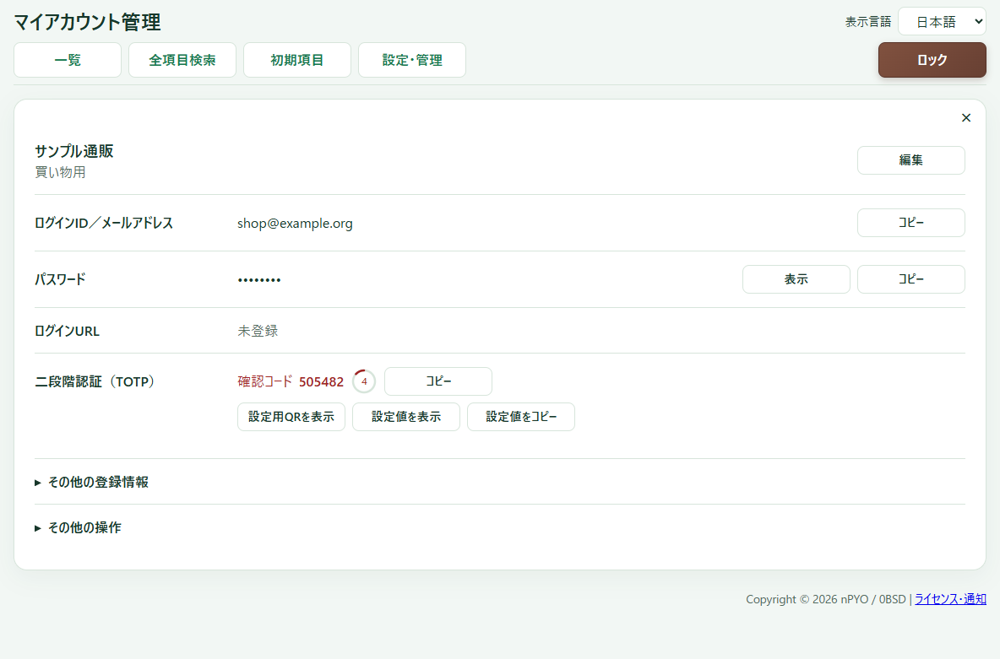
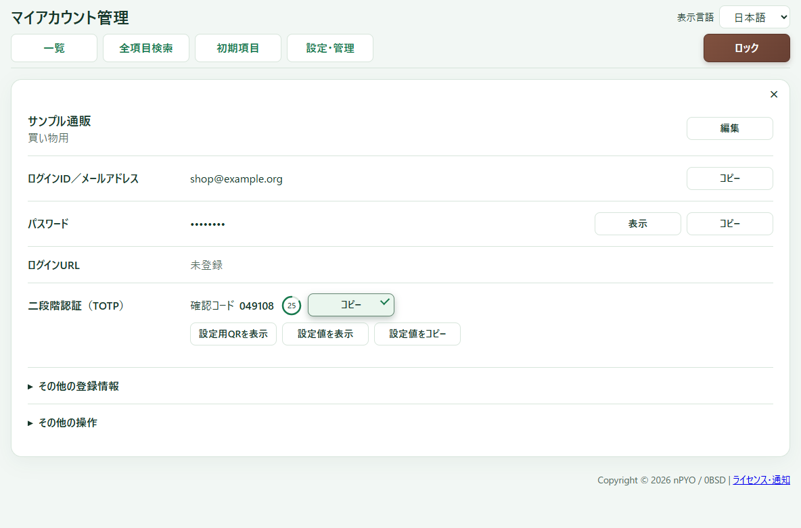
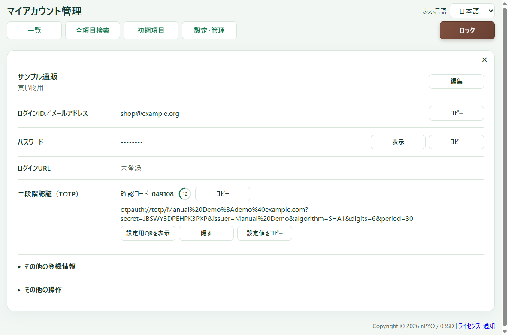
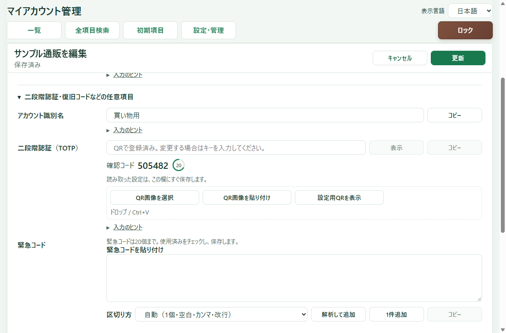
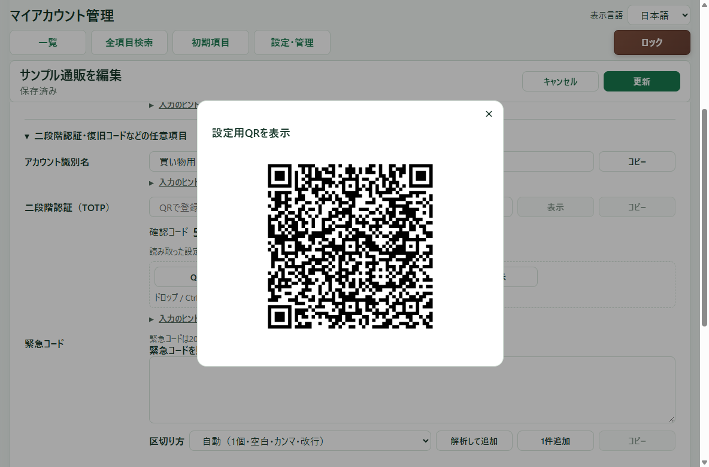
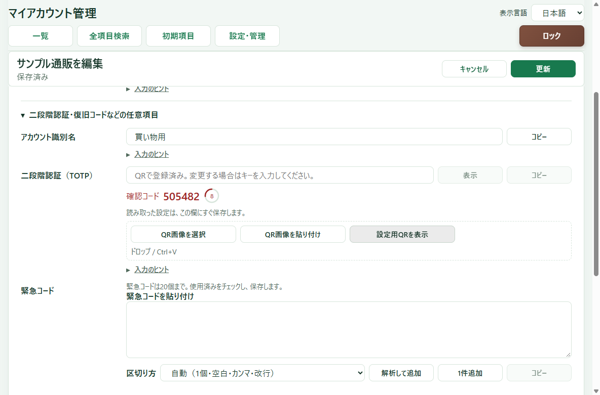

30確認コードと設定用QR
保存した二段階認証の確認コードと設定用QRを表示します。
1確認コードを見る
詳細の二段階認証欄にコードと残り時間が表示されます。

2コードをコピーする
確認コードの右にある［コピー］を押します。チェック印が表示されます。

3設定値を表示する
［設定値を表示］を押すと、保存した認証設定が表示されます。

4設定値を隠す
［隠す］を押し、設定値が画面から隠れたことを確認します。
5編集画面からQRを開く
［編集］で任意項目を開き、二段階認証欄の［設定用QRを表示］を押します。

6設定用QRを確認する
設定用QRが開きます。終わったら右上の×を押します。

7QRを閉じたことを確認する
編集画面へ戻り、QRが隠れています。変更がなければ［キャンセル］で詳細へ戻ります。
